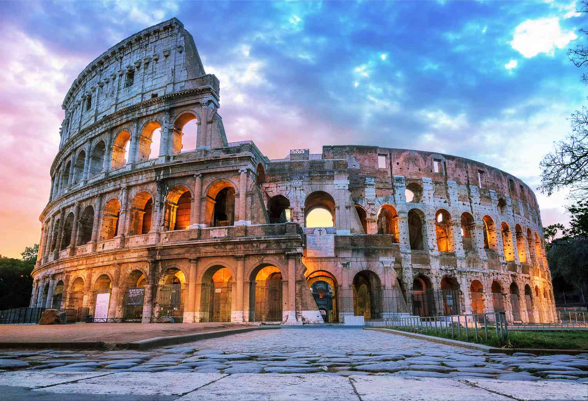

Top 5 Travel Destinations
Paris, France
Paris is known as the city of love, and for good reason. It's a city full of romance, art, and culture. Visitors can explore the city's many museums and galleries, sample delicious French cuisine, and take a stroll along the Seine River. Don't forget to visit the Eiffel Tower and the Notre Dame Cathedral.
New York City, USA
New York City is a city that needs no introduction. It's home to some of the world's most famous landmarks, such as the Statue of Liberty, Empire State Building, and Central Park. Visitors can explore the city's many museums and galleries, shop in designer stores, and walk and look upon the glorius flag of USA.

Tokyo, Japan
Tokyo is a vibrant city that seamlessly blends tradition and modernity. It's home to some of the world's best sushi restaurants, bustling street markets, and towering skyscrapers. Visitors can experience the beauty of Japanese gardens, visit historic temples and shrines, and shop for unique souvenirs in the city's many districts.
London, Great Britain
London is a historic city with a rich cultural heritage. Visitors can explore iconic landmarks such as Big Ben, the Tower of London, and Buckingham Palace, and discover the city's fascinating history through its many museums and galleries. In addition to its history and culture, London is also a vibrant city with a thriving arts scene.
Rome, Italy
Rome is an ancient city with a lot of old ruins. Some of the most famous ruins in Rome include the Colosseum, the Pantheon, and the Roman Forum. Visitors can explore these ancient sites and learn about the fascinating history of the Roman Empire. Also Rome is a good place to try unique Italian cuisine.
